。后来皮卡(56)证明了第二个特征值
。后来皮卡(56)证明了第二个特征值8．存在性定理
当18和19世纪的数学家们创立了大量类型的微分方程时，他们就发现解出很多这些方程的方法是不合用的。在多项式方程的情形下，解四次以上方程的努力失败后，高斯转而去证明根的存在性（第25章第2节）。和这种情况有点相像，在微分方程的工作中，若求出了显解，则这一事实本身就证得了存在性；而求显解的失败就使数学家转而去证明解的存在性。这样的证明即使并不显示出一个解或把解表示为有用的形式，但仍满足多种目的。几乎在所有的情形下，微分方程都是物理问题的数学描述。因为没有什么东西可以有效地保证数学方程可以求解，所以解的存在性证明至少会保证解的寻求不是作无谓的尝试。存在性的证明还会回答这样的问题：关于给定的物理情况，我们必须知道些什么，就是说，什么初始条件和边界条件保证有一个解，并且最好是保证有唯一的解。另外有些目标，在存在性定理工作开始之初可能没有想象到，现在立即被认识到了。解是否随着初始条件连续地变动？或者当初始条件或边界条件稍稍变化时是否有完全新的现象产生？例如，由行星的一个初始速度值得到的抛物轨道，作为初始速度稍微变化的结果，可以变成椭圆轨道。轨道上这样的差异在物理上是最有意义的。更进一步，解问题的某些方法论，如像狄利克雷原理或格林原理的运用，都预先假定了一个特解的存在。这些特解的存在性并没有建立起来。
在我们给出关于存在性定理的工作的某些简短叙述之前，先说明偏微分方程的一种分类可能是有帮助的，这种分类实际上是在这世纪相当晚的时候才做出的。虽然拉普拉斯和泊松已用把这些方程划归为正规或标准形式的办法对分类作了某些努力，但杜波依斯雷蒙引入的分类现在已成为标准的了。1839年(37)他用特征线方法（第22章第7节）把最一般的齐次二阶线性方程
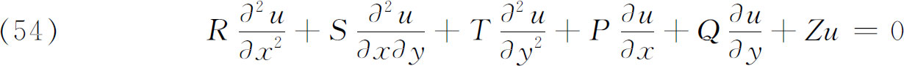
进行了分类，方程中的系数都是x和y的函数，这些系数和它们的一阶和二阶导数都是连续的。特征曲线到x-y平面的投影（这些投影也叫特征）满足
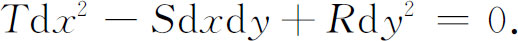
特征为虚值、相异实值或相同实值，取决于
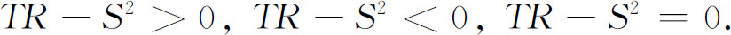
杜波依斯雷蒙分别叫这些情形为椭圆的、双曲的和抛物的。然后他指出，引入新的独立实变量
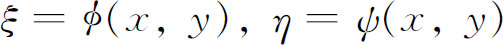
之后，上述方程总可以分别变换到下面三种正规形式之一：
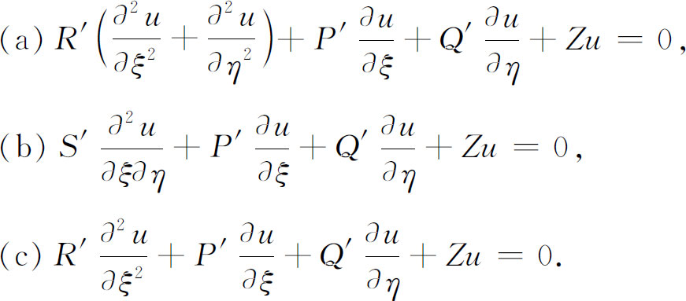
曲线族ø（x，y）＝常数和ψ（x，y）＝常数是两族特征曲线的方程。
可附加的补充条件对三类方程是不同的。在椭圆型的情形（a），人们考虑x-y平面的一个有界区域并给定u在边界上的值（或一个等价的条件），而要求u在区域内的值。对双曲型微分方程（b）的初值问题，人们必须在某初始曲线上给定u与
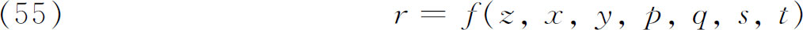
。还可以有边界条件。对于抛物型情形（c），虽然今天知道可以给（c）加上一个初始条件和边界条件，但那时适当的初始条件却还未指明。偏微分方程的这个分类法已推广到多变量方程、高阶方程和方程组。虽然分类和补充条件在这世纪的早期是不知道的，但数学家们渐渐地知道了这些差别，并且这些差别已出现在他们能够证明的定理中。关于存在性定理的工作成为柯西的主要活动，他强调说，在求显解无效的场合常常可以确证存在性。在一系列论文中(38)柯西注意到任何阶数大于一的偏微分方程都可以划归为偏微分方程组，他讨论了方程组的解的存在性。他称他的方法为极限的计算（Calcul des limites），但今天叫做优势函数法。这方法的本质在于证明：具有一定收敛区域的自变量的幂级数确实满足这方程组。我们将联系柯西关于常微分方程的工作来说明这个方法（第29章第4节）。他的定理仅包括方程中系数和初始条件都是解析的情形。
为了得到柯西工作的某些具体概念，我们将考虑隐含于两个自变量的二阶方程
中的东西，像通常一样，其中
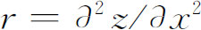
，而f对其变量是解析的。在这情形下，人们必须在初始线x＝0上指明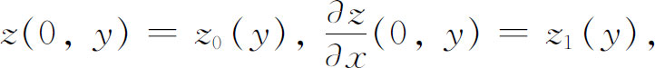
其中z0和z1是解析的。（初始线可以改成曲线，在这情形下
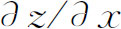
必须改为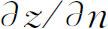
。）如果以上条件都满足了，那么解z＝z（x，y）是存在且唯一的，并且在某个从初始线出发的区域内解析。柯西关于方程组的工作被柯瓦列夫斯卡娅（Sophie Kowalewsky，1850—1891）(39)用稍为改进一点的形式独立地做出来了。柯瓦列夫斯卡娅是魏尔斯特拉斯的学生并继承了他的思想。柯瓦列夫斯卡娅是少数有名望的女数学家之一。1816年热尔曼（Sophie Germain，1776—1831）关于弹性的论文赢得了法国科学院授予的奖金。柯瓦列夫斯卡娅由于她1888年写的关于绕一固定点旋转的物体的运动方程的积分也赢得了巴黎科学院的奖金；1889年她在斯德哥尔摩当了数学教授。柯西和柯瓦列夫斯卡娅的证明后来被古尔萨(40)改进了。
代替（55），如果给定的二阶方程形为
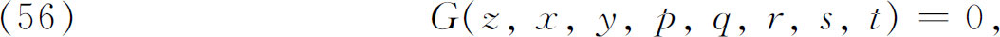
那么在写成（55）的形式之前必须先解出r。考虑一个简单的但重要的情形，设方程是
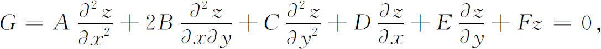
其中A，B，…，F是x，y的函数，于是为了解出r，
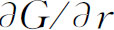
必须不是0。在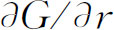
＝0的情形下，柯西问题的解并不一定存在，而当解存在时，它并不是唯一的。在有三个或更多个自变量的情形（我们考虑三个），如果方程写为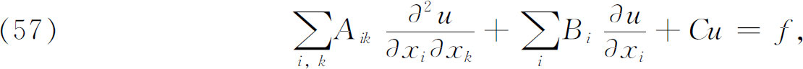
其中系数是自变量x1，x2，x3的函数，则例外情形发生于初始曲面S满足一阶偏微分方程
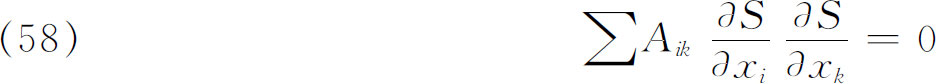
的时候。沿着这样的曲面，（57）的两个解可以是相切的，甚至有高阶接触。这个性质和一阶方程f（x，y，u，p，q）＝0的特征曲线的性质（第22章第5节）是一样的，所以这些曲面也叫特征。在物理上，这些曲面S就是波前。
关于特征的这个理论，对于两个自变量的情形，蒙日和安培（André-Marie Ampère，1775—1836）是知道特征的这个理论的。把它推广到多于两个自变量的二阶方程的情形首先是由贝克伦（Albert Victor Bäcklund，1845—1922）(41)做出的，但在伯东（Jules Beudon）(42)再次把它做出之前知道的并不广泛。
20世纪最主要的法兰西数学家阿达马（Jacques Hadamard，1865—1963），在他的《关于波的传播的讲义》（Leçons sur la propagation des ondes，1903）中，把特征理论推广到了任意阶的偏微分方程。作为例子，我们来考虑自变量为x1，x2，…，xn而应变量为ξ，η，ζ的三个二阶偏微分方程的方程组。这个方程组的柯西问题是：在n-1维“曲面”Mn-1上给定了ξ，η，ζ和
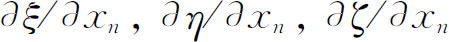
的值，求出函数ξ，η和ζ。于是，除非Mn-1满足一个六次的一阶偏微分方程，比如说H＝0，否则函数ξ，η和ζ的二阶和高阶导数就都可以计算。所有满足H＝0的“曲面”是特征“曲面”。根据一阶偏微分方程的理论，微分方程H＝0有由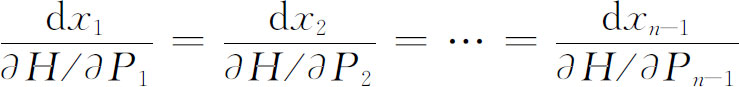
定义的特征线（曲线），其中
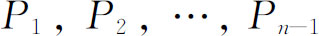
沿“曲面”Mn-1而取的关于x1，x2，…，xn-1的偏导数。这些线叫做原来二阶方程组的双特征。在光的理论中，它们就是射线。目前特征在偏微分方程的理论中起着重大的作用。例如，在特征理论的基础上，达布(43)曾经给出积分两个自变量的二阶偏微分方程的强有力的方法。它把问题转化为积分一个或多个常微分方程，包括了蒙日、拉普拉斯和其他一些人的方法。
另外一类存在性定理处理了狄利克雷问题，就是用直接方法或用狄利克雷原理的方法建立ΔV＝0的解的存在性。二维狄利克雷问题（但不是极小化狄利克雷积分的狄利克雷原理）的第一个存在性证明是由魏尔斯特拉斯的学生施瓦茨（1843—1921）给出的。施瓦茨于1892年在柏林接替魏尔斯特拉斯，受到魏尔斯特拉斯对此问题的提示。在关于边界曲线的普遍假设下，利用所谓交替法的手续(44)，他证明了解的存在性(45)。
在同一年，即1870年，卡尔·诺伊曼用算术平均法给出了三维狄利克雷问题(46)的解的另一个存在性证明，而他也没用到狄利克雷原理(47)。其思想主要发挥在他的《关于阿贝尔积分的黎曼理论的讲义》（Volesungen über Riemann's Theorie der Abel'schen Integrale）(48)中。
后来庞加莱（Henri Poincaré）(49)用扫除法，即“扫出去”的方法，这方法处理问题的办法是，造出一系列在区域R上不调和但取正确边值的函数，这些函数变得越来越调和。
最后，希尔伯特（David Hilbert）重建了威廉·汤普林和狄利克雷的变分方法，并建立了狄利克雷原理，作为证明狄利克雷问题的解的存在性的一个方法。1899年(50)，希尔伯特证明了在区域、边值和允许函数的适当条件下，狄利克雷原理确实成立。他使狄利克雷原理成为函数论中的一个有力工具。在含有1901年(51)做的工作的另一出版物中，希尔伯特给出了更为一般的条件。
狄利克雷原理的历史是值得重视的。格林、狄利克雷、威廉·汤普森以及他们那个时代的其他一些人把这原理认为完全可靠的方法并自由地运用它。后来，黎曼在复变函数论中指明它对导出主要结果是非凡的工具。所有这些人都明白基本的存在性问题还没有解决，甚至在1870年魏尔斯特拉斯宣布他的批判之前，他怀疑这方法就已有几十年了。后来，在本世纪，这原理被希尔伯特所拯救、利用并扩充了。假如前进步伐要使原理的应用等待希尔伯特的工作，那么19世纪很大一段关于位势理论和函数论的工作就会丧失掉了。
拉普拉斯方程ΔV＝0是椭圆型微分方程的基本形式。许多存在性定理是对更一般的椭圆型微分方程，诸如
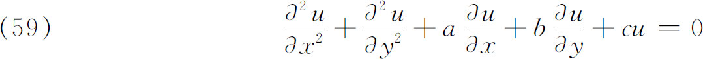
建立的。这种定理的变种是繁多的。我们将只叙述一个关键的结果。这方程的解的存在性和唯一性（解在边界上的值是规定好了的）是由皮卡(52)对充分小的区域证明了的。这结果已被皮卡和其他人扩充到多变量、大区域和其他方面。皮卡(53)还证明了系数是解析的上述形式的（甚至是稍微更普遍一些的）方程在求解区域内仅具有解析解，即使这解取非解析的边界值也是这样。
迄今所讨论的定理已一般地处理了解析微分方程和解析初值或边界数据。然而，这样一些条件对应用是太局限了，因为所给物理数据可能不是解析的。另外一大类定理处理不太严厉的条件，我们将只给出一个例子。应用于双曲方程的黎曼方法依赖于其特征函数v的存在性。像我们指出过的，黎曼没有证明v的存在性。
对于这个双曲方程的情形（见［40］），杜波依斯雷蒙在1889年寻找适当的条件并得到了结果(54)，这结果是对x＝常数与y＝常数都是特征的情形表达的，它是这样说的：如果沿曲线AB给出了连续函数u与
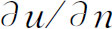
，即任何特征线交曲线AB不多于一次，则存在这微分方程的一个并且只有一个解u，它沿AB取u与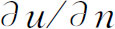
的已给值。这解定义在过A与过B的特征所确定的矩形上。另外，如果连续函数u的值在互相联结的两特征线段上给定了，那么u在特征所确定的矩形上仍然是唯一确定的。用x，y和u作为空间坐标来表示，第一个结果说的是曲面u（x，y）以给定倾斜度通过一给定空间曲线。第二个结果意味着解或曲面包含在两条相交的空间曲线所确定的空间里。对连续的初始条件u与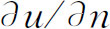
（在第二种情形下是u），解在上述矩形中将是正则的或处处满足偏微分方程。u与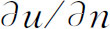
的间断性将沿着矩形中的特征传播。19世纪的后半叶，对区域D中Δu＋k2u＝0的特征值的存在性做了大量工作。主要结果是：对于已给区域和在三个边界条件u＝0，
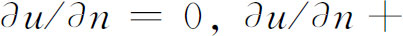
hu＝0（当正法向量指向区域外面时，h＞0）的任何一个之下，总有k2的无穷多个离散值，而每一个值就有一个解。在二维情形下，用沿边界固定的薄膜振动来说明这定理。k的值是无穷多个纯粹谐振的频率，相应的解给出薄膜在实现其特征振动时的变形。主要的第一步是施瓦茨(55)的证明，他证明了
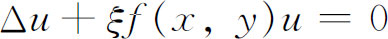
的第一个特征函数的存在性，就是说，证明了存在一个U1，使得
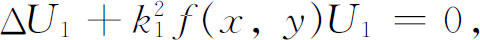
而在所考虑区域的边界上U1＝0。他的方法给出了找解的步骤，并且可用于计算。后来皮卡(56)证明了第二个特征值
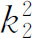
的存在性。施瓦茨在1885年的论文中还指出，当区域连续变化时，第一特征值 的值也连续地变化，且当区域变小时，
的值也连续地变化，且当区域变小时， 无限增大。这样，较小的膜发出较高的第一谐音。
无限增大。这样，较小的膜发出较高的第一谐音。
1894年庞加莱(57)证明了
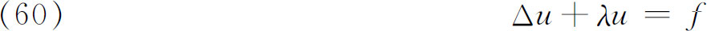
在一个有界三维区域内的所有特征值的存在性及其基本性质，这里λ是复数，在区域边界上u＝0。u的存在性是用推广了的施瓦茨方法证明的。其次他证明u（λ）是复变数λ的整函数，其极点是实的，这些正是特征值λn。然后他得到特征解Ui，即
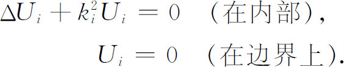
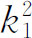
都是特征数（特征值），并确定相应特征解的频率。在物理上，庞加莱的结果有如下意义：（60）中的函数f可以想象为一个作用力。力学系统的自由振动是那样一些振动，在其中强迫振动退化并变为无穷。事实上，（60）是一个振动系统的方程，这系统被振幅为f的周期力激发；而其特征解就是系统的自由振动，它一次激发后就无限地持续下去。这些自由振动的频率与ki成比例，根据庞加莱的方法计算出来，它们就是对应于强迫振动u变为无穷的那些
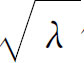
值。在这世纪末，从施瓦茨1885年的基本论文开头的关于偏微分方程的初值问题和边值问题的系统理论仍然是不成熟的。这个领域的工作于20世纪迅速地铺开了。
参考书目
Bacharach，Max：Abriss der Geschichte der Potentialtheorie，Vandenhoeck and Ruprecht，1883．
Burkhardt，H．：“Entwicklungen nach oscillirenden Functionen und Integration der Differential-gleichungen der mathematischen Physik，”Jahres．der Deut．Math．-Verein．，Vol．10，1908，1-1804．
Burkhardt，H．and W．Franz Meyer：“Potentialtheorie，”Encyk．der Math．Wiss．，B．G．Teubner，1899-1916，Ⅱ A7b，464-503．
Cauchy，Augustin-Louis：Œuvres complètes，Gauthier-Villars，1890，（2），8．
Fourier，Joseph：The Analytical Theory of Heat （1822），Dover reprint of English translation，1955．
Fourier，Joseph：Œuvres，2 vols．，Gauthier-Villars，1888-1890；Georg Olms （reprint），1970．
Green，George：Essay on the Application of Mathematical Analysis to the Theories of Electricity and Magnetism，1828，reprinted by Wezäta-Melins Aktiebolag，1958；also in Ostwald's Klassiker＃61 （in German），Wilhelm Engelmann，1895．
Green，George：Mathematical Papers，Macmillan，1871；Chelsea （reprint），1970．
Heine，Eduard：Handbuch der Kugel funktionen，2 vols．，1878-1881，Physica Verlag （reprint），1961．
Helmholtz，Hermann von：“Theorie der Luftschwingungen in Röhren mit offenen Enden，”Ostwald's Klassiker der exakten Wissenschaften，Wilhelm Engelmann，1896．
Klein，Felix：Vorlesungen über die Entwicklung der Mathematik im 19．Jahrhundert，2 vols．，Chelsea （reprint），1950．
Langer，R．E．：“Fourier Series，the Genesis and Evolution of a Theory，”Amer．Math．Monthly，54，PartⅡ，1947，1-86．
Pockels，Friedrich：Über die partielle Differentialgleichung Δu＋k2u＝0，B．G．Teubner，1891．
Poincaré，Henri：Œuvres，Gauthier-Villars，1954，9．
Rayleigh，Lord （Strutt，John William）：The Theory of Sound，2nd ed．，2 vols．，Dover （reprint），1945．
Riemann，Bernhard：Gesammelte mathematische Werke，2nd ed．，Dover （reprint），1953，pp．156-211．
Sommerfeld，Arnold：“Randwertaufgaben in der Theorie der Partiellen Differentialgleichungen，”Encyk．dermath．Wiss．，B．G．Teubner，1899-1916，ⅡA7c，504-570．
Todhunter，Isaac，and Karl Pearson：A History of the Theory of Elasticity，2 vols．，Dover （reprint），1960．
Whittaker，Sir Edmund：History of the Theories of Aetherand Electricity，rev．ed．，Thomas Nelson and Sons，1951，Vol．Ⅰ．
————————————————————
(1) 其手稿今保存在交通工程学校（Ecole des Ponts et Chaussées）的图书馆里。
(2) Œuvres，1 ．
(3) Mém．de l'Acad．des Sci．，Paris，（2），4，1819/1820，185-555，1824年版和5，1821/1822，153-246，1826年版；仅第二部分转载于傅里叶的《全集》里，2，3-94。
(4) 第196页＝Œuvres，1，210。
(5) Mém．divers savans，1，1827，3-312＝Œuvres，（1），1，5-318；也可见Cauchy，Nouv．Bull．dela Soc．Phil．，1817，121-124＝Œuvres，（2），2，223-227．
(6) Mém．del'Acad．desSci．，Paris，（2），1，1816，71-186．
(7) Nouv．Bull．de la Soc．Philo．，3，1813，388-392．
(8) Jour．für Math．，39，1850，73-89；44，1852，356-374；和47，1854，161-221＝Green's Mathematical Papers，1871，3-115．
(9) Mém．Acad．Sci．St．Peters．，（6），1，1831，39-53．
(10) Trans．Camb．Phil．Soc．，53，1835，395-430＝Mathematical Papers，187-222．
(11) Resultate aus den Beobachtungen des magnetischen Vereins，Vol．4，1840＝Werke，5，197-242．
(12) Jour．de Math．，12，1847，493-496＝Cambridge and Dublin Math．Jour．，3，1848，84-87＝Math．and Physical Papers，1，93-96．
(13) 第27章第9节。
(14) Jour．de l'Ecole Poly．，14，1833，194-251．
(15) Annales de Chimie et Physique，（2），53，1833，190-204．
(16) Jour．de Math．，4，1839，126-163．
(17) Jour．de Math．，4，1839，351-385．
(18) Jour．de l'Ecole Poly．，14，1834，191-288．
(19) Jour．für Math．，26，1843，185-216．
(20) Jour．de Math．，（2），13，1868，137-203．
(21) Math．Ann．，1，1869，1-36．
(22) 见拜尔利（William E．Byerly）的An Elementary Treatise on Fourier Series，Dover （reprint），1959，与霍布森（E．W．Hobson），The Theory of Sphericaland Ellipsoidal Harmonics，Chelsea （reprint），1955。
(23) Mém．del'Acad．des Sci．，Paris，（2），3，1818，121-176．
(24) Abh．der Ges．der Wiss．zu Gött．，8，1858/1859，43-65＝Werke，156-178．
(25) v与基本解或格林函数不一样。
(26) Jour．für Math．，57，1860，1-72＝Wissenscha ftliche Abhandlungen，1，303-382．
(27) Sitzungsber．Akad．Wiss．zu Berlin，1882，641-669＝Ges．Abh．，2，22 ff．
(28) Jour．für Math．，104，1889，241-301 ．
(29) Vol．2，Book Ⅳ，Chap．4，2nd ed．，1915．
(30) Mémde l'Acad．des Sci．，Paris，（2），1827，375-394．
(31) Jour．de l'Ecole Poly．，13，1831，1-74．
(32) Trans．Camb．Phil．Soc．，8，1849，287-319＝Math．and Phys．Papers，1，75-129．
(33) Mém．de l'Acad．des Sci．，Paris，（2），7，1827，375-394．
(34) Exercices de math．，1828＝Œuvres，（2），8，195-226．
(35) Exercices de math．，1828＝Œuvres，（2），8，253-277．
(36) Phil．Trans．，155，1865，459-512＝Scientific Papers，1，526-597．
(37) Jour．für Math．，104，1889，241-301 ．
(38) Comp．Rend．，14，1842，1020-1025＝Œuvres，（1），6，461-467和Comp．Rend．，15，1842，44-59，85-101，131-138＝Œuvres，（1），7，17-33，33-49，52-58．
(39) Jour．für Math．，80，1875，1-32．
(40) Bull．Soc．Math．de France，26，1898，129-134．
(41) Math．Ann．，13，1878，411-428．
(42) Bull．Soc．Math．de France，25，1897，108-120．
(43) Ann．de l'Ecole Norm．Sup．，（1），7，1870，175-180．
(44) 施瓦茨的方法见于克莱因的Vorlesungen über die Entwicklung der Mathematik im 19．Jahrhundert，Chelsea （reprint），1950，1，p．265，其中叙述了这个方法的大意；又见于福赛思（A．R．Forsyth）的Theory of Functions，Dover （reprint），1965，2，十七章，其中作了完整的叙述，在后一书中给出了许多文献。
(45) Monatsber．Berliner Akad．，1870，767-795＝Ges．Math．Abh．，2，144-171．
(46) Königlich Sächsischen Ges．der Wiss．zu Leipzig，1870，49-56，264-321．
(47) 这方法描述于凯洛格（Oliver D．Kellogg）的Foundations of Potential Theory，Julius Springer，1929，281 ff中。
(48) 第二版，1884，238 ff。
(49) Amer．Jour．of Math．，12，1890，211-294＝Œuvres，9，28-113．
(50) Jahres．der Deut．Math．-Verein．，8，1900，184-188＝Ges．Abh．，3，10-14．
(51) Math．Ann．，59，1904，161-186＝Ges．Abh．，3，15-37．
(52) Comp．Rend．，107，1888，939-941；Jour．de Math．，（4），6，1890，145-210；Jour．de Math．，（5），2，1896，295-304．
(53) Jour．de l'Ecole Poly．，60，1890，89-105．
(54) Jour．für Math．，104，1889，241-301 ．
(55) Acta．Soc．Fennicae，15，1885，315-362＝Ges．Math．Abh．，1，223-269．
(56) Comp．Rend．，117，1893，502-507．
(57) Rendiconti del Circolo Matematico di Palermo，8，1894，57-155＝Œuvres，9，123-196．